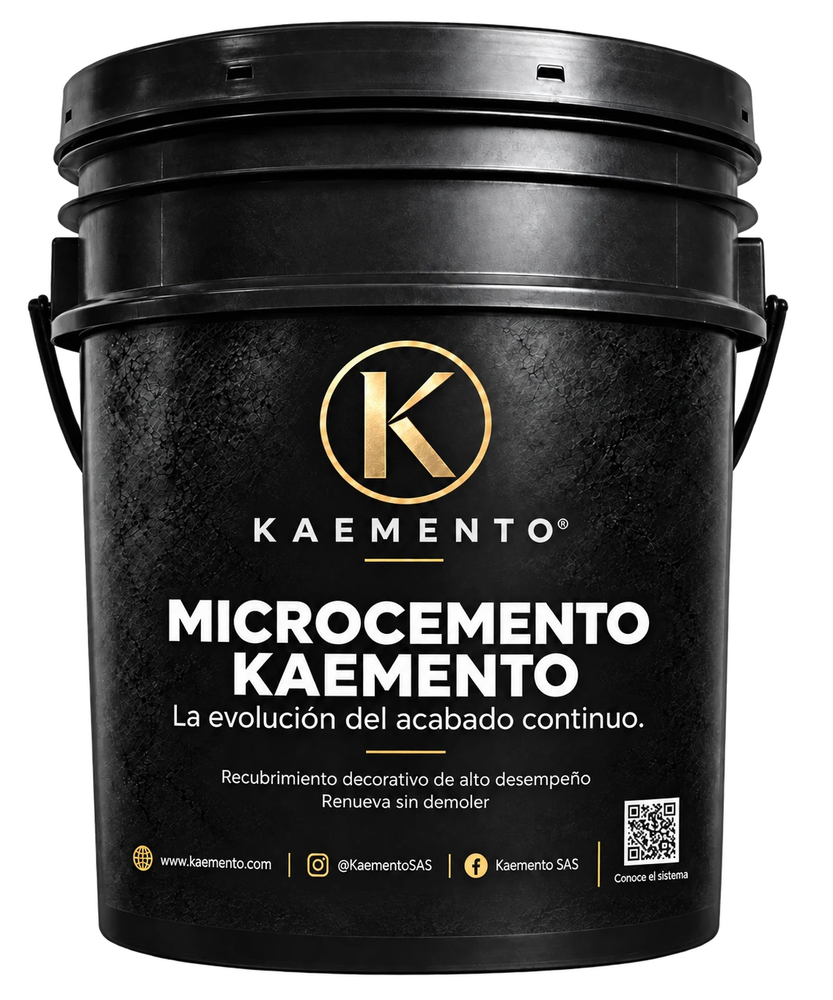
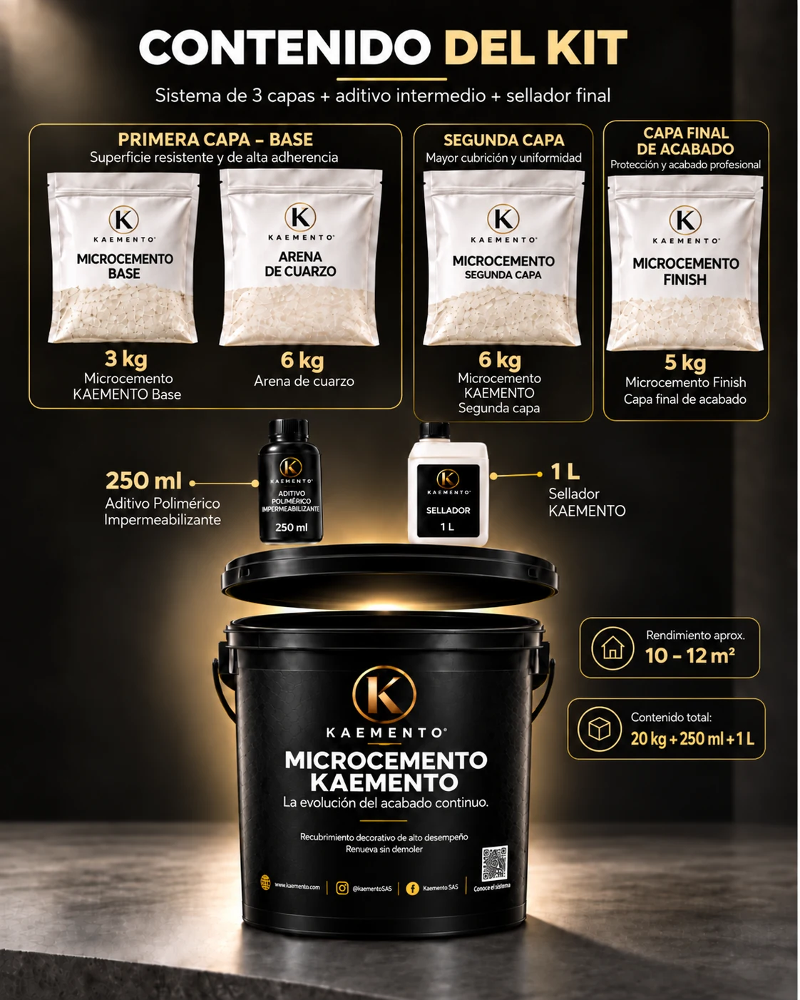

Evaluación
Revisamos el soporte y la necesidad.
LANZAMIENTO 2026
La evolución del microcemento
Un sistema desarrollado a partir de 13 años de experiencia en superficies continuas. Componentes coordinados, metodología documentada y respaldo técnico KAEMENTO en una sola solución.
PRECIO ESPECIAL DE LANZAMIENTO
Exclusivo para los primeros 30 clientes.
30 días de lanzamiento · Cupos limitados
CONFIGURA TU KIT
UN SISTEMA COMPLETO
Cada componente cumple una función dentro del resultado final.
Estructura, anclaje y cuerpo mineral.
Impermeabilización, adherencia y continuidad entre capas.
Cobertura y consolidación.
Precisión, textura y definición estética.
Protección superficial y preservación del acabado.
Base mineral con arena de cuarzo, aditivo polimérico impermeabilizante entre la primera y la segunda capa, Finish de granulometría fina y sellador final incluido.
Un sistema. Una metodología. Un resultado.
Renueva sin demoler sobre soportes técnicamente aptos. Hasta 12 m² por kit, según soporte y condiciones de aplicación.
COLOR ESTÁNDAR O MEZCLA DE TONOS
Selecciona tu color o crea una mezcla de tonos, elige el acabado del sellador y define la cantidad de kits.
Precio especial de lanzamiento · 15 % de descuento
La evolución del microcemento
PRECIO DE LANZAMIENTO
Promoción disponible para los primeros 30 clientes.
Selecciona la modalidad de color.
Total del producto
Despacho en máximo 48 horas hábiles.
Envíos a todo Colombia. Transporte no incluido; costo a cargo del comprador.
Contactar por WhatsApp ↗SOLUCIÓN KAEMENTO
Microcemento KAEMENTO integra tres capas cementicias, aditivo polimérico impermeabilizante y sellador final. Está desarrollado para lograr continuidad visual, alto desempeño y acompañamiento técnico en cada etapa.
CONTENIDO DEL KIT
Base, arena de cuarzo, segunda capa, acabado final, aditivo polimérico y sellador KAEMENTO, incluidos en el kit. Rendimiento aproximado: de 10 a 12 m² por kit, dependiendo del estado y rugosidad de la superficie y de la técnica de aplicación.
Total: 20 kg de componentes secos + 250 ml + 1 litro.

PASO A PASO
Revisamos el soporte y la necesidad.
Acondicionamos la superficie.
Ejecutamos el sistema especificado.
Finalizamos y verificamos el desempeño.
SUPERFICIES CONTINUAS


MICROCEMENTO EN LOS ESPACIOS
Pisos, muros, baños y terrazas: una selección de ambientes y aplicación de nuestro catálogo de Microcemento KAEMENTO.

Sala en tono Arena, con superficies continuas y luz natural.

Baño en Extra Blanco, con continuidad entre piso y muros.

Sala en Negro Profundo, con chimenea y acabados de alto contraste.

Terraza en Terracota, con superficies de expresión mineral.

Interior en Gris Cemento, con piso continuo de tono neutro.

Aplicación con llana sobre una superficie preparada.
Acabados del sistema
La carta de microcemento reúne tonos minerales, tierras, grises y acentos profundos para acompañar diferentes lenguajes arquitectónicos.
Las muestras digitales son orientativas. El color, la textura y la variación final deben validarse sobre una muestra física aprobada para cada sistema, lote y proyecto.

Los colores estándar son Extra Blanco, Arena, Gris Cemento, Negro Profundo y Terracota. Los demás tonos de la carta son referencias para consultar su disponibilidad o fabricación personalizada. KAEMENTO puede desarrollar colores personalizados en fábrica según los requerimientos del proyecto. Las muestras digitales son orientativas. El color, la textura y la variación final deben validarse mediante una muestra física aprobada antes de producción y aplicación.
La personalización puede modificar tiempos de producción, precio y cantidad mínima. Consulte las condiciones para su proyecto.
Colores estándar: Extra Blanco · Arena · Gris Cemento · Negro Profundo · Terracota.
INFORMACIÓN CLAVE
Rendimiento aproximado: de 10 a 12 m² por kit, dependiendo del estado y rugosidad de la superficie y de la técnica de aplicación.
Espesor total aproximado del sistema completo.
Base, segunda capa, finish, aditivo y sellador final.
No recomendamos seleccionar una capa o producto de forma aislada sin revisar el soporte y el uso final. La preparación, dosificación, aplicación y curado forman parte del desempeño.
PREGUNTAS FRECUENTES
Rendimiento aproximado: de 10 a 12 m² por kit, dependiendo del estado y rugosidad de la superficie y de la técnica de aplicación. El espesor total aproximado es de 3 mm.
Incluye tres capas cementicias: Base con arena de cuarzo, Segunda Capa y Finish. Se complementan con el aditivo polimérico impermeabilizante y el sellador KAEMENTO; siga la secuencia del manual de aplicación.
La posibilidad depende de la estabilidad, humedad y compatibilidad de la superficie existente. Una evaluación previa define si el soporte puede conservarse y cómo prepararlo.
Sí. KAEMENTO puede desarrollar tonos en fábrica. El tono y la textura deben validarse con una muestra física aprobada; la personalización puede modificar precio, plazo y cantidad mínima.
Puede solicitar cualquiera de las dos opciones. Indique ciudad, área y superficie para evaluar el suministro, la instalación y el acompañamiento técnico que requiere su proyecto.
KAEMENTO EN MOVIMIENTO
Secuencias ilustrativas del proceso. La intervención se define según el diagnóstico y las condiciones de cada superficie.
Una propuesta visual para transformar un baño con superficies de expresión mineral.
Edición visual sin audio · Imágenes generadas con IA, no registro de una obra ejecutada.
HABLEMOS DE SU PROYECTO
Cuéntenos dónde y cómo desea aplicarlo. Le orientamos sobre material, preparación e instalación.
ASESORÍA KAEMENTO